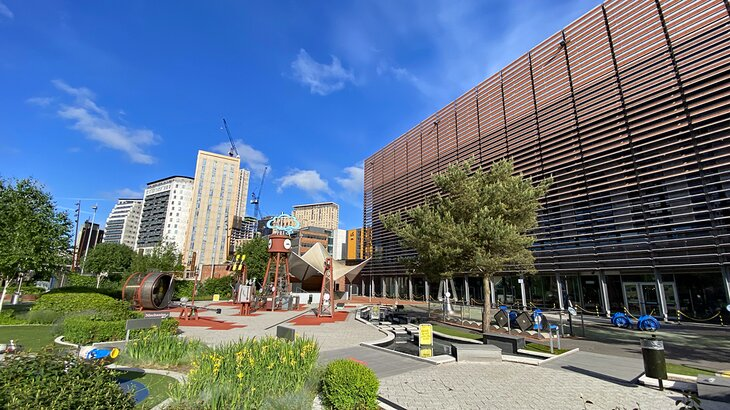
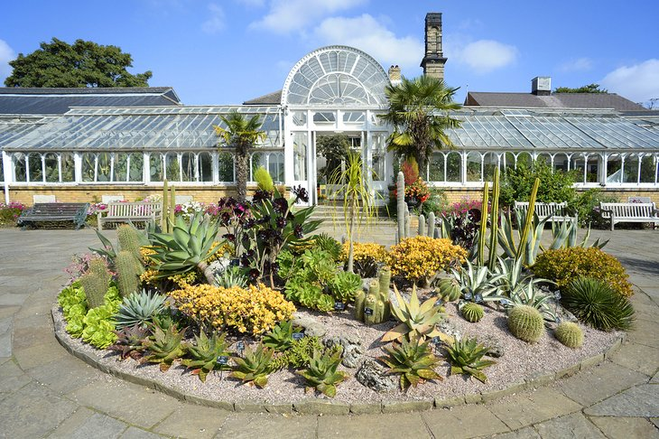
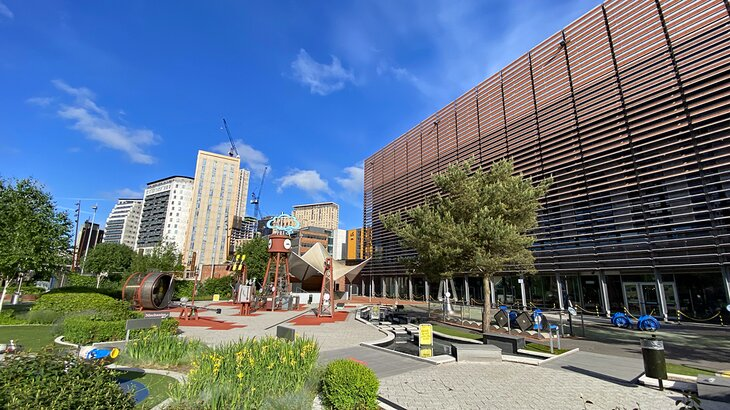
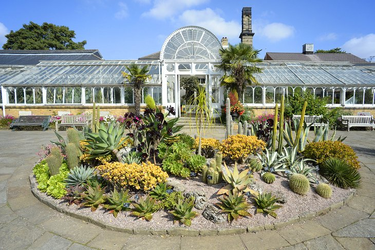
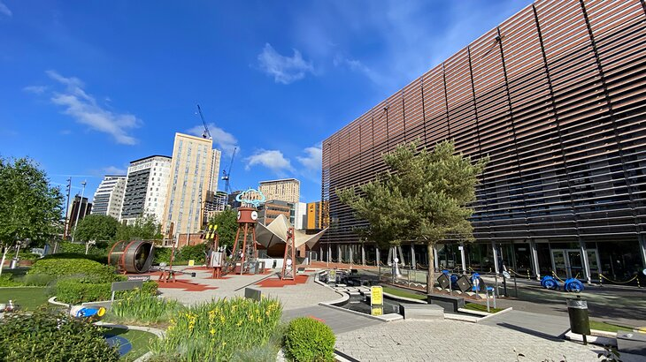
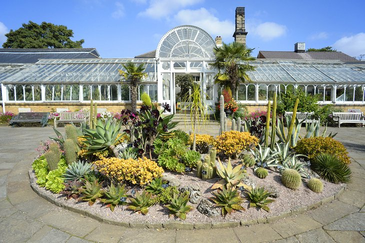
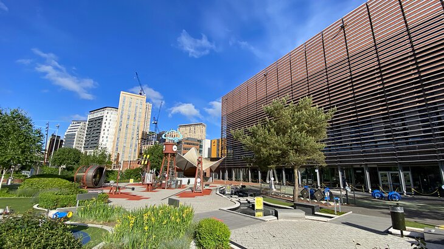
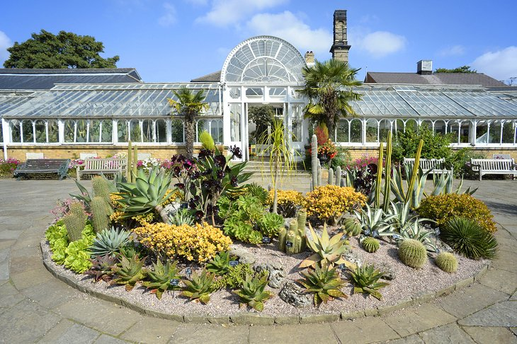

The heart of Birmingham revolves around the pedestrian-friendly Victoria Square, an area that can be explored via the Birmingham City Centre Path. Along the way, you'll discover the attractive old Town Hall, built in 1832 and a masterpiece of Victorian architecture. Resembling a Roman temple, this impressive structure features 40 ornate Corinthian columns made of Anglesey marble.
This award-winning museum includes a large number of fascinating science-related exhibits, many of them hands-on and interactive.
Spread across 15 acres in the affluent suburbs of Edgbaston, these 19th-century gardens are easy to get to from the city center and home to countless species. A visit is very much like stepping back in time, thanks to the perfectly preserved Victorian-era glasshouses and other period park features.
I have lived in Birmingham more than 16 years. I love it here so much and I'm happy to show you around